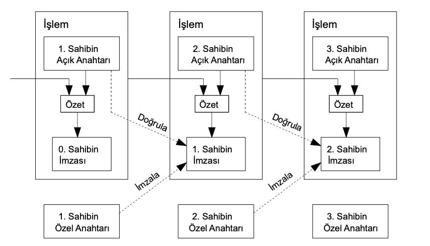

grubundan daha fazla işlemci gücünü toplu olarak kontrol ettiği
sürece güvenlidir.
2. İşlemler
Elektronik parayı dijital bir imza zinciri olarak tanımlamaktayız.
Her para sahibi, paranın bir önceki işlemiyle birlikte, parayı
alacak kişinin açık anahtar özetini dijital olarak imzalayıp
paranın sonuna ekleyerek, bir sonraki sahibe o parayı
yollamaktadır. Ödemeyi alan kişi mülkiyet zincirini doğrulamak
için imzaları doğrulayabilir.

Elbette buradaki sorun, ödeme alan kişinin paranın önceki
sahiplerinden birinin parayı iki kez harcamadığını
doğrulayamamasıdır. Yaygın bir çözüm, her işlemde çift harcamayı
denetleyen güvenilir, merkezi bir otorite veya darphane sunmaktır.
Her işlemden sonra para, yeni para basımı için darphaneye iade
edilmelidir ve sadece doğrudan darphanede basılmış paraların iki
kez harcanmadığına güvenilmektedir. Bu çözüm ile ilgili problem,
bütün işlemlerin bir bankaymış gibi darphaneyi işleten şirketten
geçme zorunluluğu ve tüm para sisteminin kaderinin bu şirketin
elinde olmasıdır.
Ödemeyi alan kişinin, paranın önceki sahiplerinin daha önce hiçbir
işlemi imzalamadığını bildiği bir yol bulmamız gerekmektedir.
Amaçlarımız doğrultusunda en önemli işlem, en eski işlemdir ve
böylece sonraki çift harcama girişimleri bizi
ilgilendirmemektedir. Bir işlemin gerçekleşmediğini onaylamanın
tek yolu, tüm işlemlerden haberdar olmaktır. Darphaneye dayalı
modelde, darphane tüm işlemlerden haberdardı ve hangisinin önce
geldiğine o karar veriyordu. Güvenilir bir üçüncü taraf olmadan
bunu başarabilmek için, işlemlerin alenen ilan edilmesi
gerekmektedir [1] ve katılımcıların aldıkları siparişin tek bir
geçmişi olduğu konusunda hemfikir olacakları bir sisteme ihtiyaç
duyulmaktadır. Ödeme yapılan kişi her işlem sırasında, düğüm
çoğunluğunun aldıkları ilk işlemin o işlem olduğu konusunda
hemfikir olduğu bir kanıta ihtiyaç duymaktadır.
3. Zaman Damgası Sunucusu
Önerdiğimiz çözüm bir zaman damgası sunucusuyla başlamaktadır. Bir
zaman damgası sunucusu, damgalanmayı bekleyen öğelerden oluşan
bloğun özetini alarak ve bu karışımı bir gazete veya Usenet
gönderisi[2-5] gibi her tarafa yayımlayarak çalışmaktadır. Zaman
damgası, özete girmek amacıyla verinin o anda var olması
gerektiğinin kanıtıdır. Özetinde bir önceki zaman damgasını
bulunduran da dahil olmak üzere her zaman damgası, eklenen her
zaman damgası ile kendisinden öncekileri sağlamlaştırarak bir
zincir oluşturmaktadır.
2